Project 01 · Digital banking
Redesigning Pay & Transfer for faster, clearer everyday payments.
I redesigned AIB’s Pay & Transfer journey: payee setup, IBAN validation, instant payments, authentication and what happens when the daily limit is reached. The goal was to make common transfers easier to finish while keeping security and payment status clear.
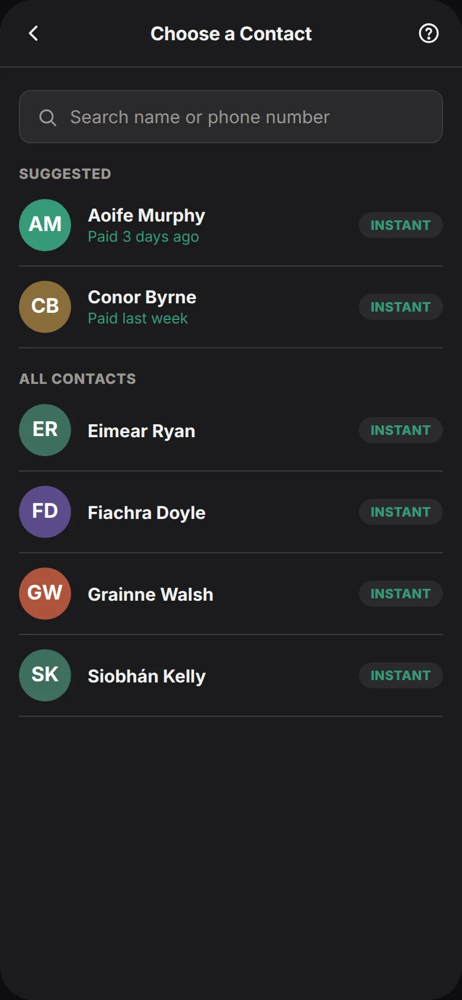
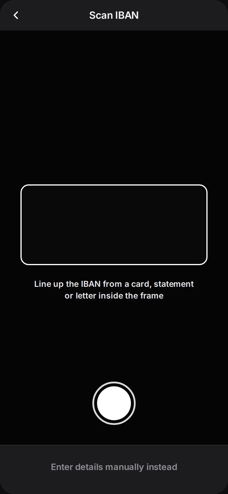
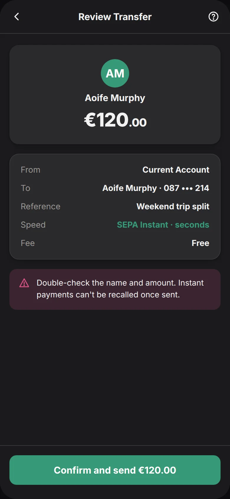
AIB MOBILE BANKING
The starting point: AIB’s mobile app for iOS and Android.
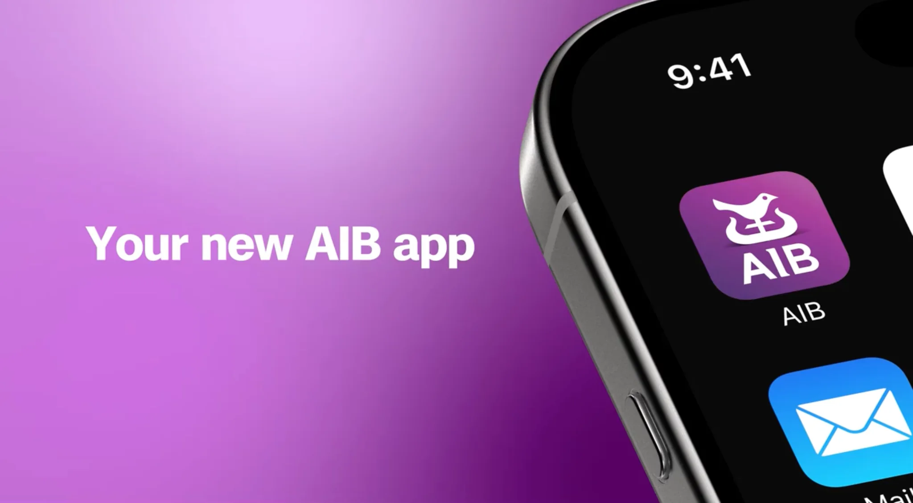
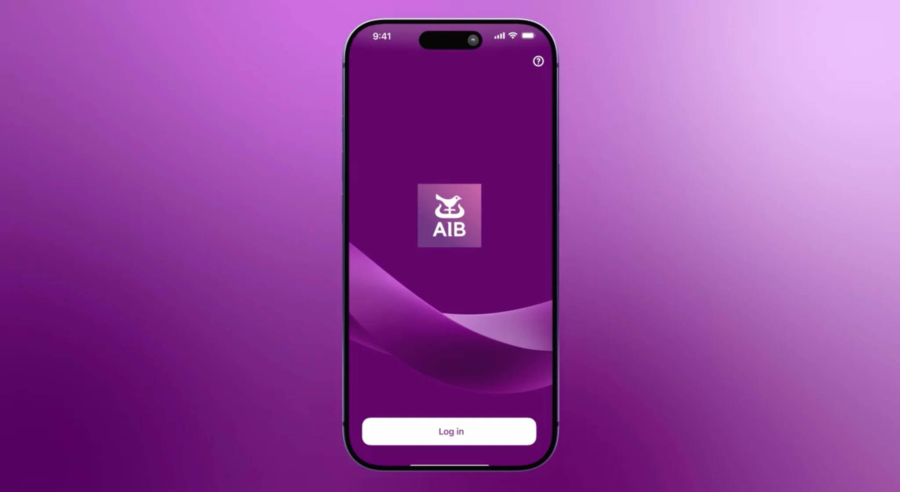
Context
Pay & Transfer needed to become easier without weakening the controls around a bank transfer.
More banking activity was moving to mobile and online channels in Ireland, while payment fraud kept security central to the experience. For Pay & Transfer, that meant reducing unnecessary steps in routine transfers without treating higher-risk actions the same way.
External market figures. They are not AIB product metrics. Sources: Banking & Payments Federation Ireland, Payments Monitor Q2 2022 and Q2 2023; FraudSMART Payment Fraud Report H2 2022. Figures describe the Irish payments market during the period, not performance of this redesign.
Final experience
The final flow covered five stages across thirteen screens.
The screens follow the order of the customer task: choose a recipient, validate details, enter the amount, confirm security checks and see the outcome.
Each screen focuses on the decision available at that step and keeps enough context for the customer to understand what happens next.
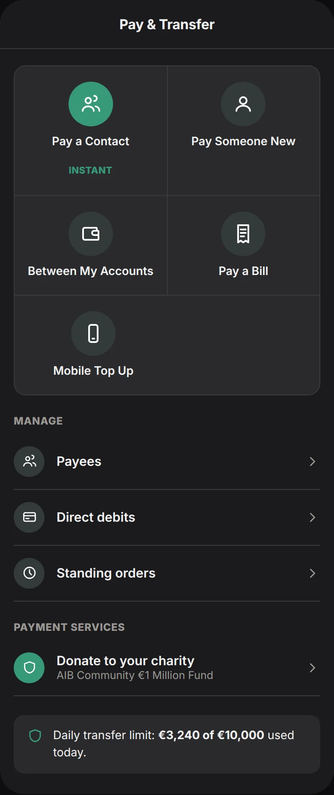
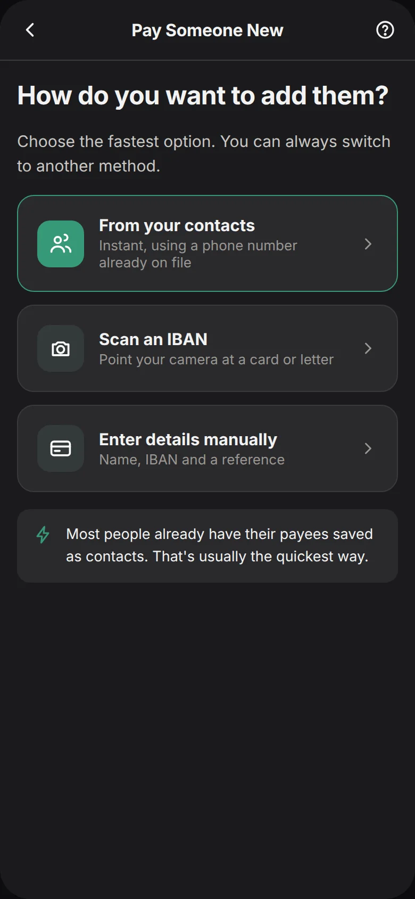
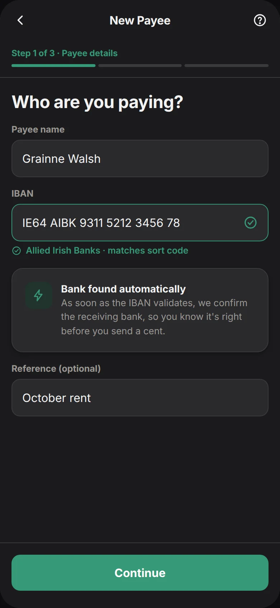
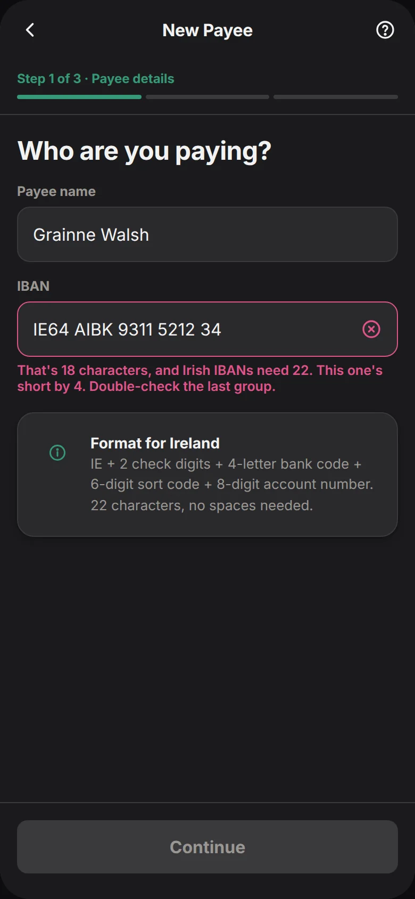
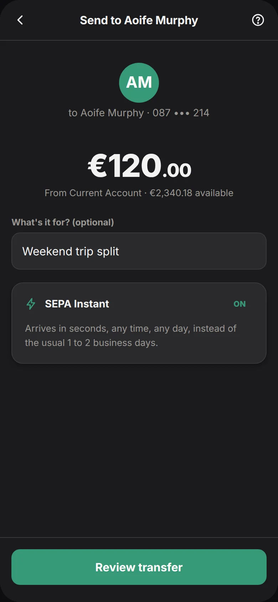
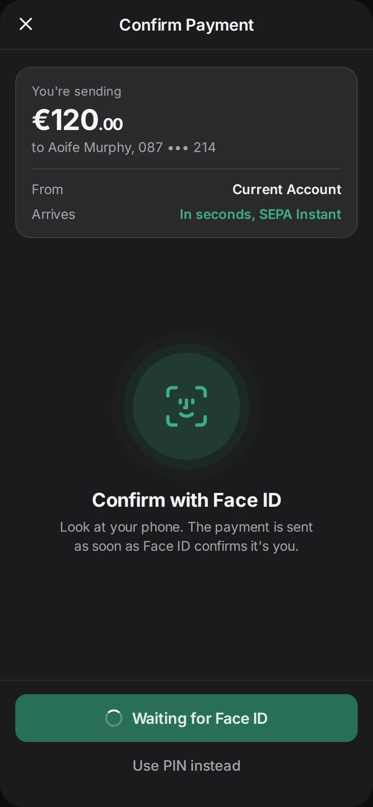
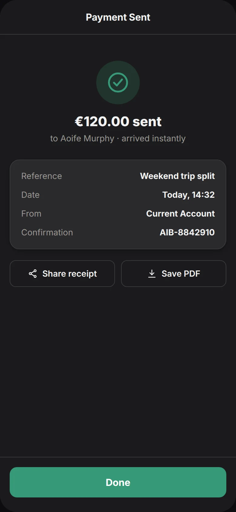
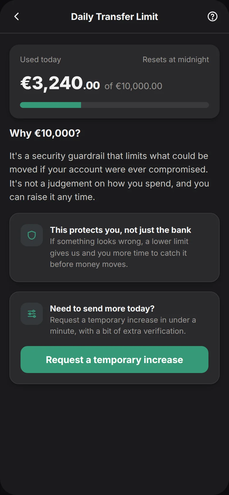
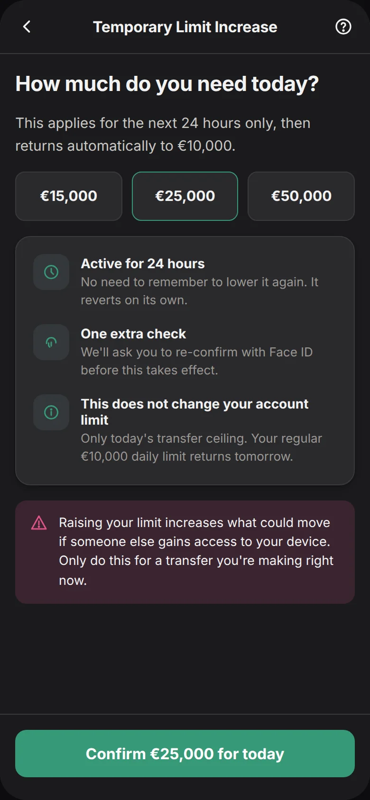
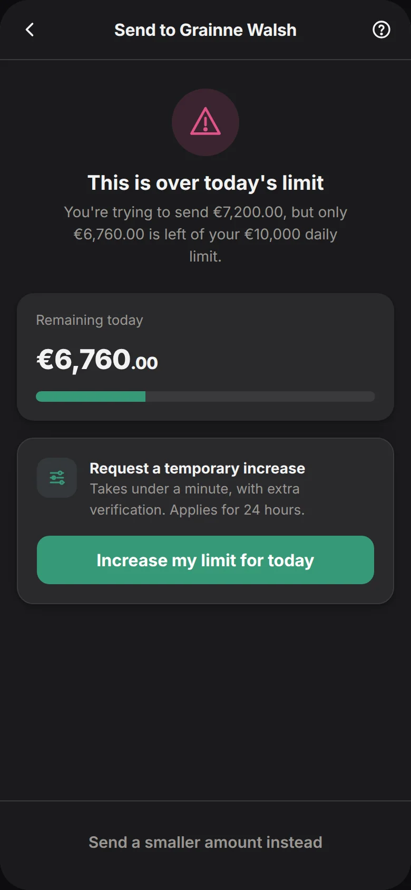
What existed / What I redesigned
The existing journey worked, but validation, contacts, limits and feedback felt disconnected.
Mapped the current Pay & Transfer journey and its constraints.
Identified friction, delayed feedback and dead ends.
Compared how other digital banks handle the same tasks.
Reworked validation, recipient paths, limits, feedback and authentication.
Connected the full journey, including errors and recovery.
Note: this shows the order of the work. Internal milestone dates are not included.
Static IBAN guidance, limited inline feedback, contact payments outside the primary path and a daily limit that behaved like a dead end.
Real-time validation, visible instant payments, clear feedback, strong authentication and recovery at the moment it is needed.
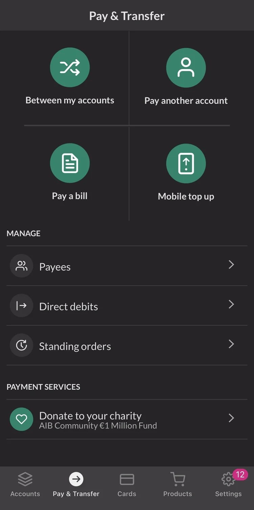
My role
My role covered the audit, interaction decisions, UI, prototyping and delivery.
Audited the existing experience, mapped friction and compared patterns across digital banking products.
Balanced customer speed with payment risk, authentication and regulatory expectations.
High-fidelity UI, component variants, error states, recovery, accessibility and interaction behaviour.
Working across functions:
Aligned customer value with business and operational constraints.
Designed the states around what the system can know, and when.
Kept controls visible without turning them into dead ends.
Benchmark
I used the benchmark to compare specific interaction patterns.
I looked at Revolut, N26 and Monzo for patterns that are already common in digital banking, and at Pix as a reference from a different payment context. I compared real-time validation, paying contacts, transaction feedback and how limits are handled, then decided what fit AIB.
Customers should know whether an IBAN is valid before submitting the form.
When possible, choosing a person should feel closer to messaging than filling a bank form.
A security limit can protect customers without forcing a support call.
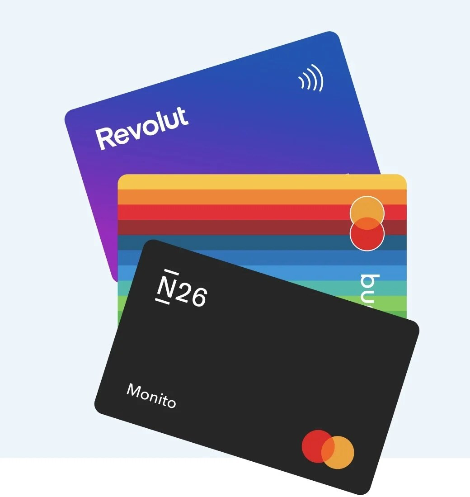
Audit findings
The audit showed four interaction problems I could fix.
IBAN errors appeared too late, Pay a Contact sat outside the main transfer path, completed steps gave little feedback, and the daily limit could stop a transfer without a clear recovery path. These became the four areas I focused on.
Payment flow
I mapped what had to happen before, during and after a transfer.
Instead of treating each screen separately, I mapped the information and checks needed across the full transfer.
Who am I paying and why?
Saved payee, new account or contact.
Confirm the IBAN and receiving bank before submitting.
Check whether SEPA or SEPA Instant is available.
Check the amount against the daily limit.
Ask for stronger checks only when the action needs them.
Make processing, success, failure and recovery clear.
Each step shows the information needed for the current decision, while keeping payment status and consequences visible.
States
I mapped the main states before designing the variants.
I listed the states that could occur around recipient validation, limits, authentication, processing and completion, then used those states to define the UI variants.
The variants reflect changes in what the product knows or what the customer can do next.
Daily limit strategy
The €10k daily limit needed a recovery path inside the transfer.
The existing limit could block a legitimate high-value transfer. I explored how to let the customer continue without making the higher limit permanent.
Block
Stop the transfer and direct the customer to support.
Permanent increase
Raise the ceiling and keep it higher for future transfers.
Temporary increase
Face ID check, an increase that lasts 24 hours and an automatic return to the usual limit.
Risk and friction
I added stronger authentication only when the level of risk changed.
Routine transfers kept the standard confirmation path. A temporary limit increase required stronger authentication because it changed the customer’s exposure.
Trust
I checked what the customer needed to know at each point in the transfer.
Before submission, the customer needs to confirm the recipient and amount. During processing, the product needs to show that the instruction is being handled. Afterward, the outcome and receipt need to be unambiguous.
Am I sending the right money to the right person?
Recipient · IBAN · receiving bank · amount · payment method
Is the bank actually processing my instruction?
Authentication · locked button · processing status · no duplicate sends
Did the money move, and can I prove it?
Result · time · reference · receipt · what to do if unsure
Decision 01
Move IBAN validation into the form.
The existing form could leave an IBAN problem until submission.
I moved validation into the form, showed the receiving bank when available and gave the customer a specific correction when the IBAN could not be accepted.
The form gives more feedback while the customer types, and there’s less doubt when they submit.
Decision 02
Bring Pay a Contact into the main recipient flow.
Pay a Contact existed, but it was separated from the main transfer entry point and required customers to find it first.
I brought Contact alongside the other recipient options so the journey could start with who the customer wanted to pay.
Starting with contacts means someone paying a new payee without a phone-linked account still needs the manual IBAN path, so that path has to stay.
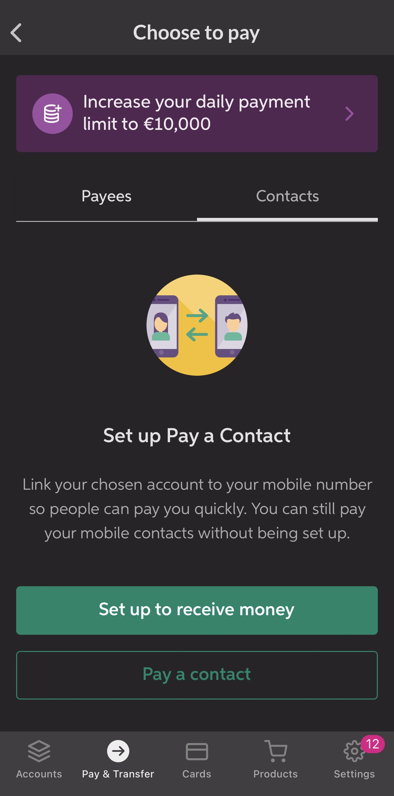
Decision 03
Add explicit feedback after actions that affect the transfer.
I added feedback where customers needed confirmation that an action had been accepted, was still processing or had completed.
Several steps previously changed with little confirmation that the action had been accepted.
The redesign uses contextual feedback, including SEPA Instant availability while entering the amount and a receipt after completion.
More states to build and maintain than one generic loading screen.
Decision 04
Let customers recover from the daily limit without leaving the transfer.
A permanent limit increase would create more exposure than the immediate transfer required. A hard stop, however, could push a legitimate customer to support.
I designed a temporary increase that asks for the new amount, requires Face ID and returns to the previous limit automatically after 24 hours.
A temporary increase that reverts automatically could surprise someone who expected it to stay, so the screen says clearly when it ends.
Trade-offs
The main trade-offs came from speed, security and recoverability.
I kept routine actions light and added extra steps when the customer changed the level of risk, such as temporarily increasing the daily limit.
Working with other teams
Some decisions required alignment with Product, Security and Engineering because the UI depended on what the system could verify and when.
IBAN validation
Question
When can the product confidently identify an account?
Constraint
Validation can take a moment or be temporarily unavailable.
Outcome
Checking, valid, invalid and unable to verify became separate states in the UI.
Daily limit
Question
How do we let legitimate high-value transfers through?
Constraint
A permanent increase leaves more exposure than the transfer needs.
Outcome
Temporary increase, Face ID check and automatic return to the usual limit.
Authentication
Question
Where should the stronger check appear?
Constraint
Asking for security checks again and again makes routine payments heavy.
Outcome
Authentication appears when risk changes, and the payment details stay on screen.
Those discussions changed the states, authentication points and recovery behaviour in the final flow.
Before / After
Three changes reduced the amount the customer had to remember or resolve outside the flow.
Enter → Submit → Error
Enter → Check → Bank identified → Continue
Setup → Find contact payment → Choose person
Choose recipient → Contact → Continue
Limit exceeded → Stop → Call support
Increase for 24 hours → Face ID → Continue → Limit returns
Earlier feedback, fewer hidden steps and recovery inside the transfer.
Components and variants
Components were defined around the states used in the transfer.
Each component has variants for the states it goes through in a transfer. Below are the main ones, rebuilt from the delivered screens.
IBAN field
Checks the account while the customer types and names the receiving bank.
Main button
Stays disabled until the step is complete and locks while the payment is being sent.
Feedback message
Says what happened and what the customer can do next. Colour is never the only signal.
SEPA Instant
Shown while the customer enters the amount, so they know when the money will arrive.
Daily limit
Shows what has been used today and changes before the customer hits the limit.
Errors and recovery
I designed recovery states alongside the main transfer flow.
| Scenario | Prevent | Communicate | Recover |
|---|---|---|---|
| Invalid IBAN | Check before submitting | Say what is wrong | Edit in place, keep what was typed |
| Instant not available | Check if Instant is available | Explain when it will arrive | Continue with standard SEPA |
| Limit exceeded | Check before submitting | Show how much is left | Temporary increase |
| Authentication failed | Keep the payment details | Explain why it failed | Try Face ID or PIN again |
| Transfer processing | Block a second send | Show the status in words | Wait for a confirmed status |
| Connection lost | Keep the payment ready | Say the result isn’t known yet | Check the status before retrying |
Where the customer could fix the problem, the flow kept the recipient, amount and payment details so they didn’t have to start again.
Uncertain outcome
An interrupted transfer needed a clear status before the customer could try again.
If the connection drops after confirmation, the customer may not know whether the transfer was submitted. I treated that separately from a normal failure and blocked another submission until the transaction status was known.
The customer confirms.
The button can’t send twice.
The transfer is pending.
Check the confirmed status.
Retry only when it’s safe.
↓
authenticating
↓
processing ──→ completed → receipt
│
├──→ failed → safe retry
└──→ unknown → status check → resolve
Interaction and motion
Small interaction details clarify what is happening without adding another screen.
The bank name appears as soon as there is enough information.
✓ Bank confirmedThe button locks while Face ID runs, so the payment can’t be sent twice.
Authenticating…The status turns into a receipt with share, save and done actions.
Payment sent ✓Accessibility
Accessibility checks focused on information that affects the transfer.
Important information could not depend only on colour, animation or precise interaction. Labels, status text, focus order and touch targets were reviewed alongside the visual states.
Hierarchy, label and formatting carry the amount. Size or colour never does it alone.
Errors use an icon, text and a way to fix it, in addition to red.
Success is written in the text and announced as a change of state, so it doesn’t rely on green.
Loading has a text status, blocks duplicate sends and doesn’t rely on animation to explain what’s happening.
A failure keeps the payment details and shows how to continue, instead of starting over.
Primary actions use comfortable touch targets, visible focus and predictable order across the journey.
Prototype and delivery
The delivery covered behaviour and states, along with the final screens.
Thirteen main states connected end to end: main flow, limits, validation, authentication and recovery.
Default, focus, valid, invalid, loading and disabled. Shared logic means fewer one-off builds.
State logic, error handling, transition rules and accessibility notes.
Visual and interaction review against the designed states, including errors.
Notes for Engineering
I documented what should happen between the screens.
The notes covered when validation starts, what is kept after an error, when the main button locks and how an uncertain transaction is resolved.
↓
authenticating
↓
processing
├─ completed → receipt
├─ failed → recovery
└─ unknown → status check
Design review checks the build against the state logic, as well as the visuals.
How I’d measure it
I defined the measures I would use to evaluate the redesigned journey after launch.
The plan focused on transfer completion, time to complete, validation errors, duplicate attempts, limit increases done by the customer and confidence after the transfer. These are criteria for evaluating the redesign. They are not reported results.
I would read completion time together with validation errors, duplicate attempts, support contacts and recovery rate. A shorter flow would not be an improvement if it created more uncertainty or failed transfers.
About the evidence
How the evidence in this case is presented.
Market figures are external context and are kept separate from AIB product performance.
The flows and interaction rules document the decisions made during the design work.
Some diagrams and component labels were reorganized for this case so the work is easier to review. They do not represent AIB’s internal naming conventions.
Reflection
The main lesson was to design status and recovery with the same care as the main flow.
This project changed how I approach financial flows. I now map validation, failure and recovery earlier, because those states also shape the main interaction.
Want to see another project?
There's also a case with Banco do Brasil and a healthcare app redesign for Unimed in the portfolio.
View all projects